放送・映像
ドラマ、映画、テレビ番組での演奏・出演・指導
NHK大河ドラマ「平清盛」「軍師官兵衛」「花燃ゆ」「いだてん」「べらぼう」、 NHKドラマ「眩」「悦ちゃん」「花子とアン」「ザ・ラスト・ショット」「大奥」などに出演、楽器指導を担当。
NHK「おかあさんといっしょ」ファミリーコンサート2017出演。映画「昼顔」出演。 NHK「いっとろっけん」「首都圏ネットワーク」などにも出演。
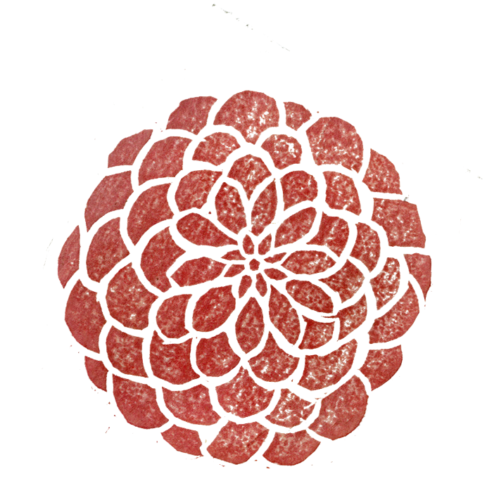
Maya YamaoShamisen / Kokyu Player
三味線・胡弓 演奏家 Shamisen / Kokyu Player
長唄三味線を軸に、古典芸能、舞台、放送、海外公演、ワークショップまで幅広く活動。 日本の音と言葉、身体表現の魅力を国内外に届けている。
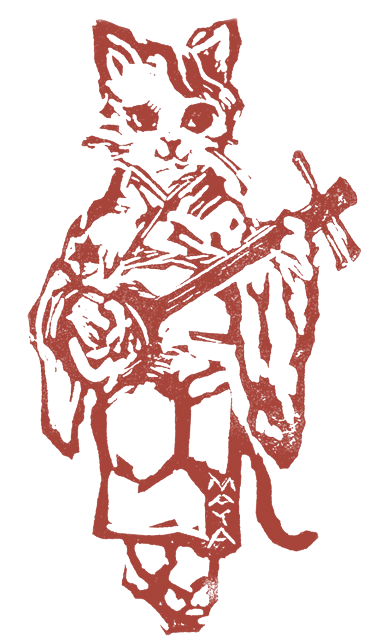
Profile
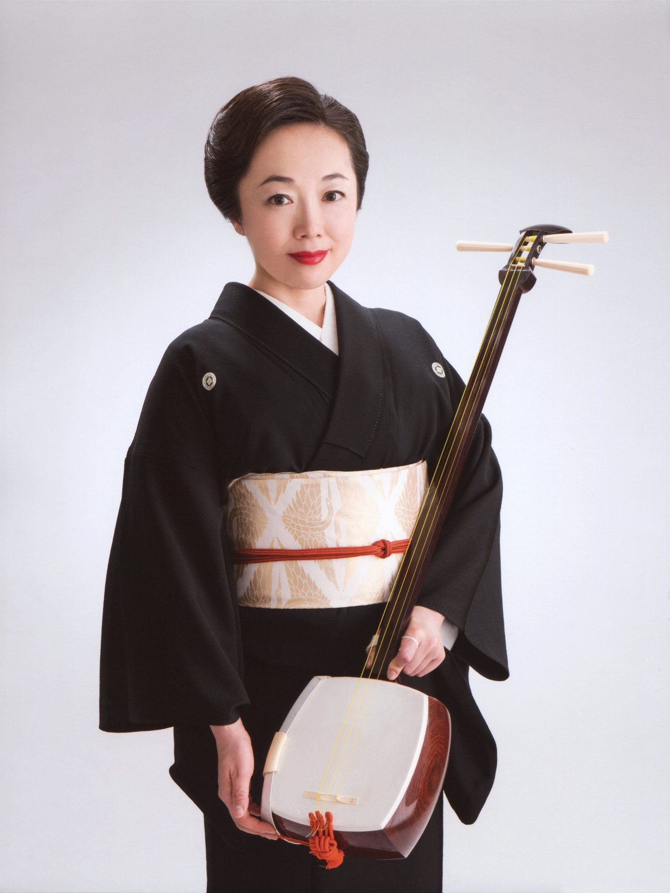
山尾麻耶は、三味線・胡弓演奏家。
6才より長唄三味線を始め、幼少期をフランスで過ごす。市川猿之助歌舞伎フランス公演への出演をきっかけに、日本の伝統文化に興味を持つ。
東京藝術大学音楽学部邦楽科卒業、同大学大学院音楽研究科修了。東京藝術大学助手を経て、現在は駿河台大学客員准教授、東野高等学校伝統芸能部コーチを務める。一般社団法人長唄協会所属。
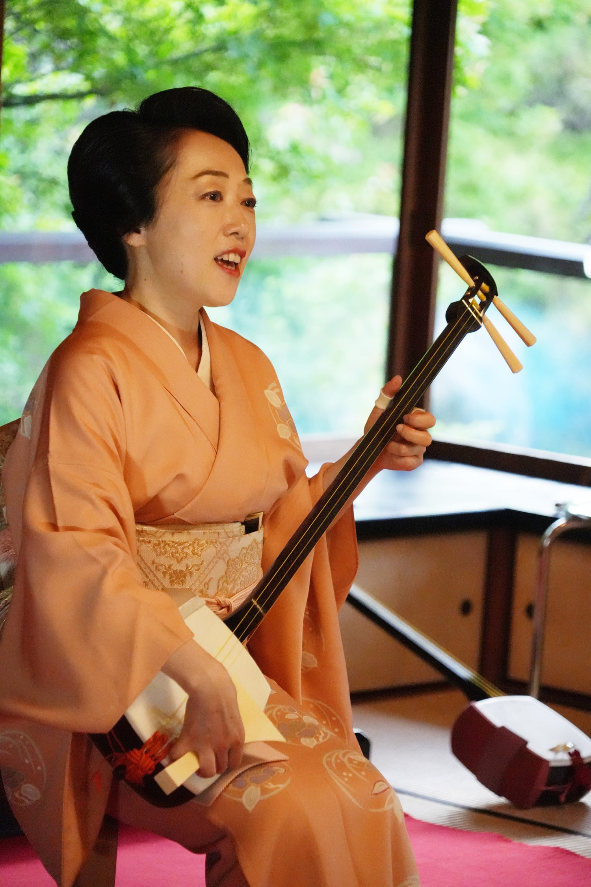
NHK大河ドラマ、NHKドラマ、映画、舞台、CMレコーディングなどでの演奏・出演・楽器指導のほか、ドイツ、フランス、アメリカ、ロシア、オーストラリアなど海外での招聘演奏も多数。
三味線、胡弓、三線、民謡、都々逸、語り、即興表現を通して、伝統芸能の魅力を幅広い世代に伝えている。
Works
放送・映像
NHK大河ドラマ「平清盛」「軍師官兵衛」「花燃ゆ」「いだてん」「べらぼう」、 NHKドラマ「眩」「悦ちゃん」「花子とアン」「ザ・ラスト・ショット」「大奥」などに出演、楽器指導を担当。
NHK「おかあさんといっしょ」ファミリーコンサート2017出演。映画「昼顔」出演。 NHK「いっとろっけん」「首都圏ネットワーク」などにも出演。
舞台・レコーディング
マルちゃん正麺CM、梅沢富美男主演舞台などのレコーディングに参加。 蜷川幸雄演出「元禄港歌」では三味線指導助手を担当。
南原清隆・野村万蔵出演／演出「現代狂言Ⅴ・Ⅵ」では沖縄の三線指導を担当。
伝統芸能・奉納演奏
京都「北野踊り」に毎年賛助出演。三社祭、神田祭などで奉納演奏を行う。 いるま和文化祭実行委員として、いるま大田楽を毎年担当。
海外公演・文化交流
ドイツ、フランス、アメリカ、ロシア、オーストラリアなど、各国で招聘演奏を行う。 全国各地の文化事業、アートプロジェクト、メセナ事業などにも多数出演。
Download
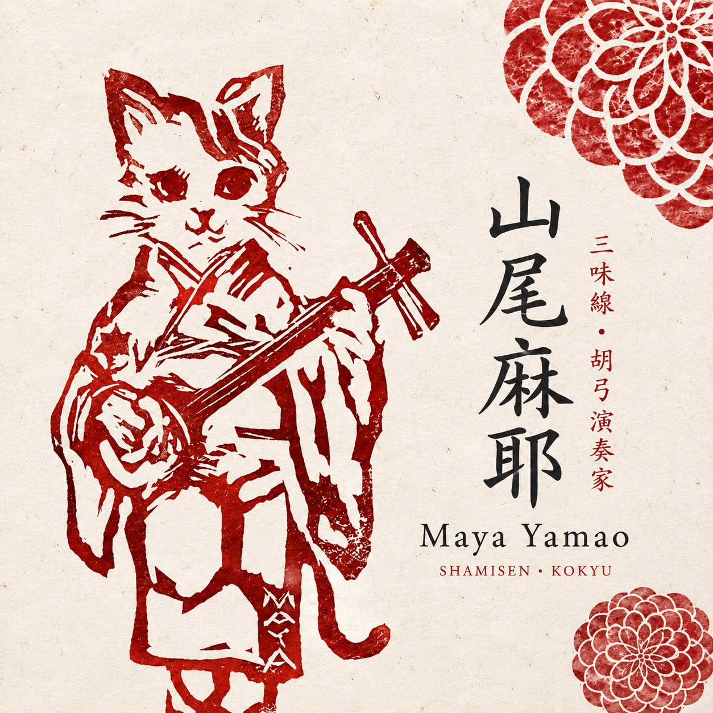
Album
三味線と胡弓の響きを、いつもの場所で静かに聴けるダウンロード音源です。 古典の息づかい、弦の余韻、身体から生まれる間合いを、すっと手元へ届けます。
配信・販売リンクは準備が整い次第こちらに掲載します。 音源についてのお問い合わせも受け付けています。
音源について問い合わせるTrio Osakayama
大田麻佐子（ピアノ）、坂田明（サックス）、山尾麻耶（三味線・胡弓）によるユニット。 即興、民謡、都々逸などを織り込み、ジャンルにとらわれないトリオセッションを行う。
古典芸能の言葉や響きと、即興音楽の自由さが交差する、唯一無二のアンサンブル。
Lessons / Workshop
三線、胡弓、三味線のレクチャーと演奏を通して、日本の弦楽器の歴史と響きを紹介します。
演奏と体験を交えながら、子どもから大人まで楽しめる参加型プログラムです。
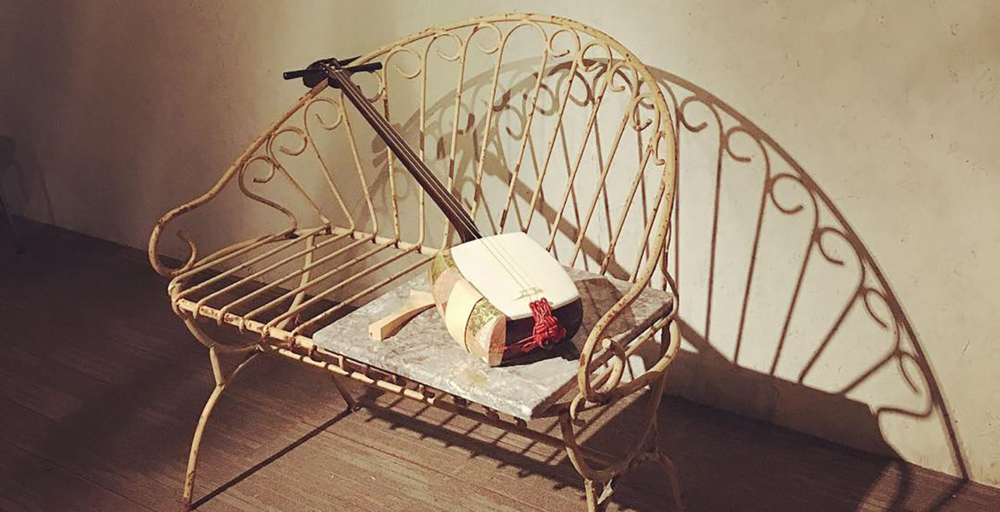
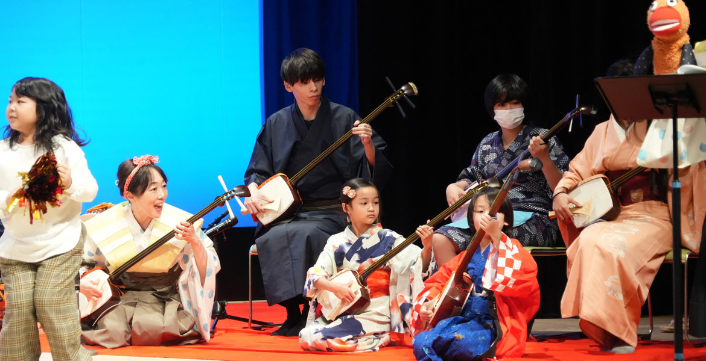
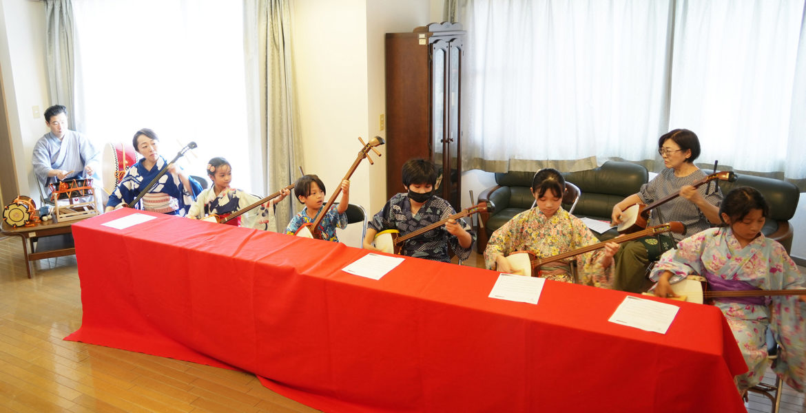
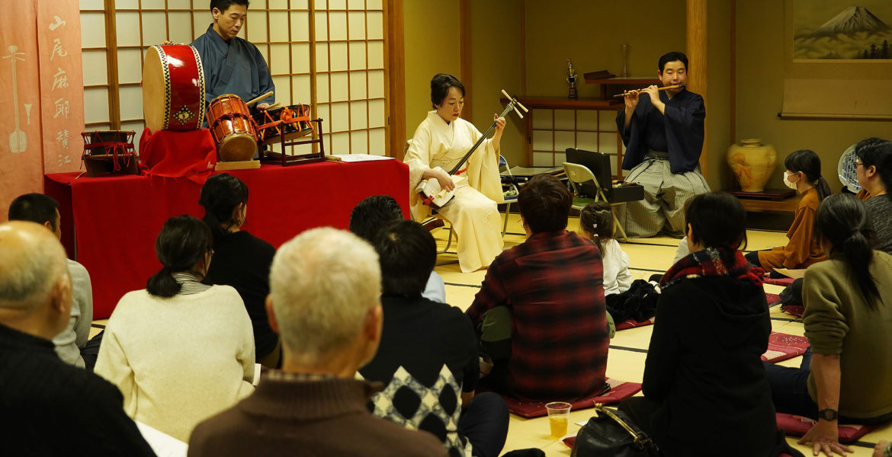
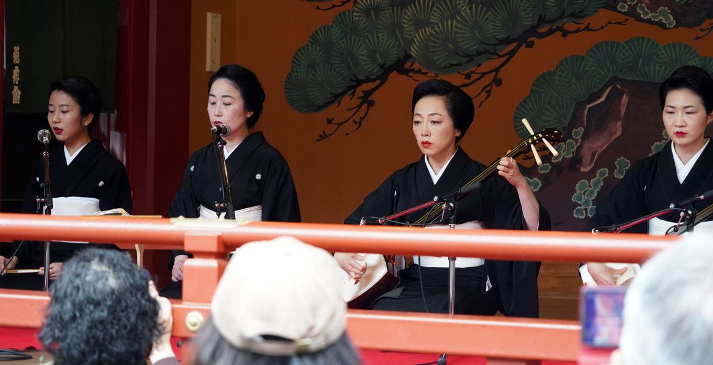
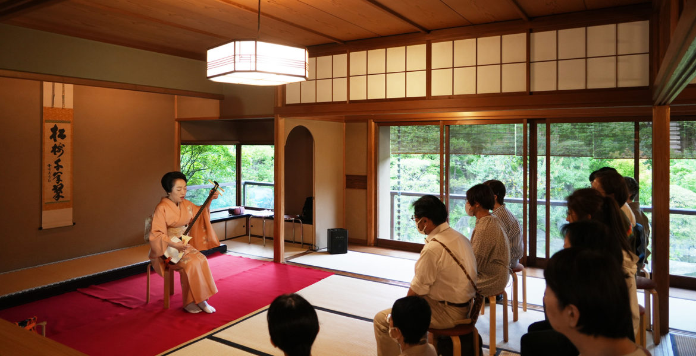
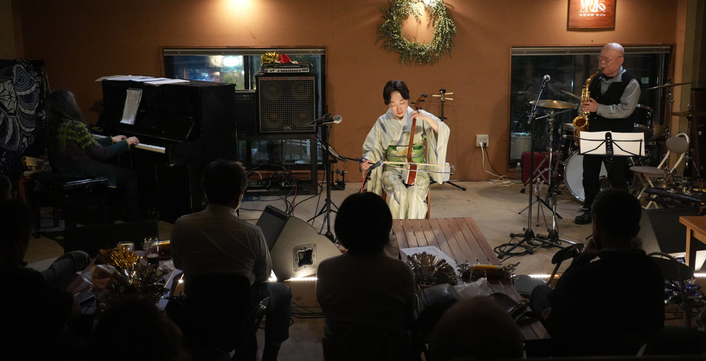
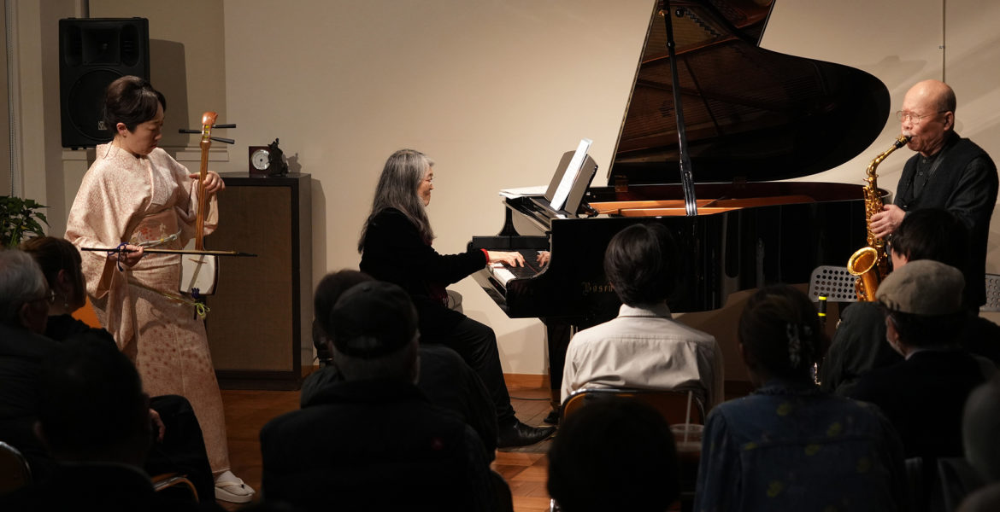
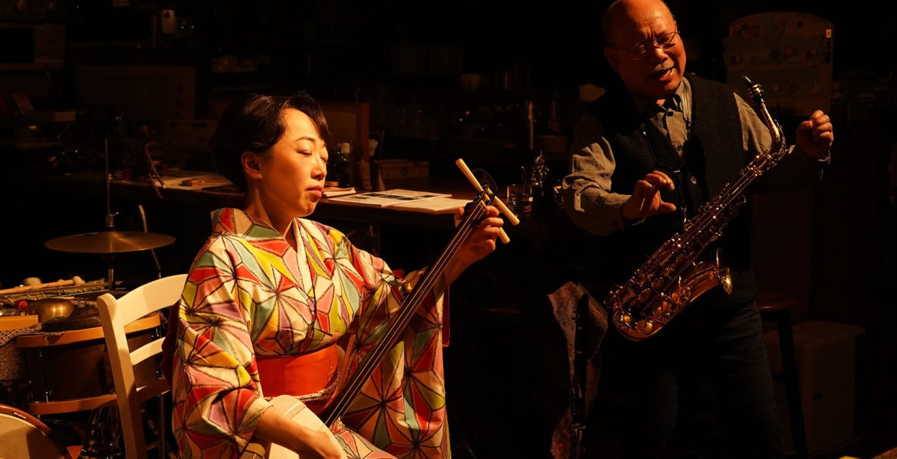